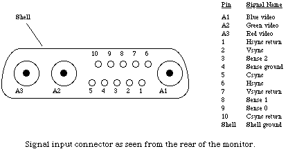
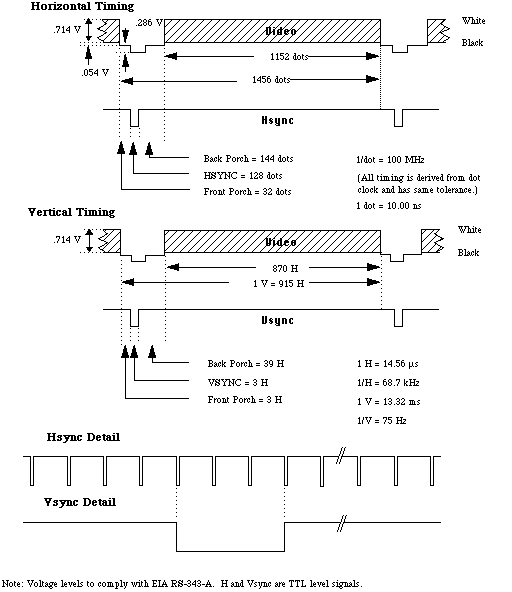

|
|
This Technical Note presents the technical specifications for the Macintosh 21"
Color Display with the objective of allowing display board and accelerator
board manufacturers to ensure compatibility with this monitor.
[Oct 01 1992]
|
Input Connector
The video and synchronization input signals are supplied via a D series size-3
shell with three internal coaxial connectors. The connector at the monitor has
ten socket contacts and three coaxial receptacles (male center pin), as shown.
The shell is Dartech type FM-13W3S or equivalent. The coaxial receptacles are
Dartech type FME1S or equivalent.

The center conductor of A3 is red video and the outer conductor is red video
return. The center conductor of A2 is green video and the outer conductor is
green video return. The center conductor of A1 is blue video and the outer
conductor is blue video return.
Sense 0, Sense 1, and Sense 2 (pins 9, 8, and 3) will be shorted to Sense
ground (pin 4) in the monitor, producing the sense line code 000.
The following lines will be connected together through low impedances at the
CPU side: Sense ground, Shell ground, the outer conductors of A1, A2, and A3,
and the returns of Hsync, Vsync, and Csync.
Back to top
Input Signal Timing

References
Macintosh 21" Color Display Owner's Guide
Designing Cards and Drivers for the Macintosh Family, Third
Edition
Back to top
Downloadables
|

|
Acrobat version of this Note (240K)
|
Download
|
Back to top
|